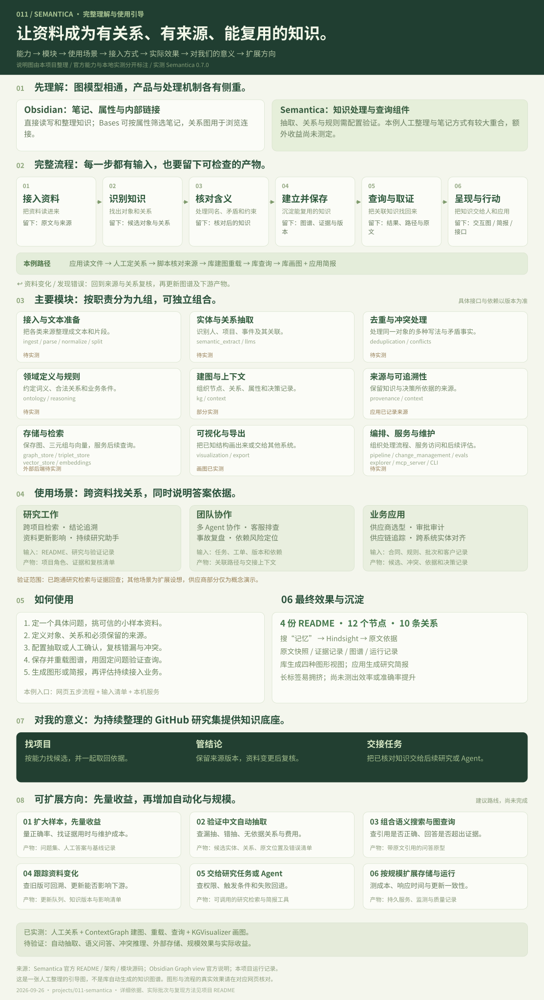

组织可查询、可追溯的知识
提供资料接入、实体与关系抽取、去重、冲突处理、建图、图查询、规则、来源追踪与可视化组件；需要按任务组合。
KNOWLEDGE, WITH CONTEXT
Semantica 是搭建知识处理系统的 Python 库：把分散资料组织成实体、关系和来源，保存后供搜索、规则检查与 Agent 调用。我们用真实研究记录，展示资料如何成为可复用的知识。
线上与文件模式展示真实运行快照，可筛选和导出快照简报；本机服务支持重新建图。当前角色由人工标注，库负责保存、重载、查询与原生画图。

AT A GLANCE / 理解摘要
共同的图模型只是起点；资料如何加工、留下什么，以及如何继续使用，才决定接入价值。
提供资料接入、实体与关系抽取、去重、冲突处理、建图、图查询、规则、来源追踪与可视化组件；需要按任务组合。
解析与切分资料，用规则、模型或人工确认对象和关系，经核对后保存为带属性的图。查询沿关系取回对象及证据，也可配置向量检索。
用于跨项目研究、证据问答、Agent 上下文、工单排查、供应链追踪与决策审计。图形帮助理解，业务应用继续使用保存的数据。
把项目、能力、结论和原文联系起来，按角色找项目、回查依据、交接简报。已实测 4 份资料、12 个节点、10 条关系；自动抽取和效率收益仍待验证。
能力范围见官方架构；对本仓库的价值是待持续检验的应用判断。查看与 Obsidian 的共同点、差异和选择建议 →
从 Obsidian 关系图的类比出发，串起能力、模块、场景、使用方法、实测效果、对你的意义与扩展路线。
01 / WHERE IT HELPS
当问题要跨多份资料找关系、处理相互矛盾的说法，或解释答案依据时，知识图谱才开始有价值。前四项直接对应本仓库的研究工作。
你会问：哪些项目都与 Agent 上下文有关，各负责哪一层？
得到：项目之间的角色关系，以及能回到 README 的依据。
你会问：网页上的一条判断，来自哪篇研究和哪份上游资料？
得到：结论 → 研究记录 → 原始来源的核查路径。
你会问：原项目许可或 API 改了，哪些研究页要复核？
得到：被该来源支持的结论和展示页清单；仍需人工判断是否过时。
你会问：上次为什么选这个演示方向，已有哪项验证？
得到：任务、决策、证据与后续行动的关联上下文。
你会问：研究、开发和核查任务依赖谁的产出？
得到：共享实体、任务关系及可追溯的交接依据。
你会问：同一故障在工单、文档和版本记录里怎样关联？
得到：相关用户、功能、版本、修复记录和来源。
你会问：一次故障涉及哪些服务、变更和应对决定？
得到：事件路径与决策依据；因果仍需独立验证。
你会问：有风险的组件经哪些依赖影响我们的产品？
得到：漏洞 → 组件 → 服务 → 负责人的多跳路径。
你会问：两份资料对签约状态说法不一，能批准吗？
得到：并列保留的冲突、来源和待复核的规则结果。
你会问：当时依据哪个版本的规则批准了这件事？
得到：申请、规则版本、证据和决策之间的记录链。
你会问：一个零件问题会波及哪些批次和客户？
得到：供应商、批次、产品和客户的受影响路径。
你会问：CRM、合同和工单中的两个名字是否同一客户？
得到：候选匹配、冲突字段与人工确认后的统一实体。
这些是适用问题与预期工作方式，不表示本页已实现全部场景。下面只实测场景 01。
02 / FROM SOURCE TO ACTION
以“为持续研究助手选择组件”为任务，逐步查看原文如何变成可保存、可查询的记录，再把搜索结果交给一个真实可导出的研究简报。
本例已接入仓库中的四份 README。选择一项，可以查看它的原文、来源和人工确认的角色；点击重建，会重新读取这些文件并保存新一批知识。
本例入口是研究资料清单：增加一条仓库文件路径、证据原文和经人工核对的角色，再执行重建。产品化后可把这个入口做成文件上传、网页地址或系统同步；这些入口需要应用开发，目前未接入本页。
本机启动方法：使用项目独立环境运行 projects/011-semantica/serve_pilot.py。完整步骤见研究记录。
下方沿用第一步选中的资料。字段含义由人核对，脚本检查原文确实存在，Semantica 再把这些记录连接起来。点击步骤只是在查看本次履历；重新执行入口在第一步。
这里的图是一张“关系地图”。它把研究问题、项目角色、具体项目和原文证据连接起来。下面显示的是本次实际保存的图谱，可选一个项目，顺着高亮连线读。
下方是我们制作的读图说明。可另看库自带图形的实际输出 ↗，或用完整引导串起模块、场景和使用流程。
窄屏可左右滑动全图；下面的关系解读会完整显示所选路径。
这些数量描述知识的结构，不代表准确率。箭头表示已写入的关联；它不表示项目之间已经集成，也不证明因果。
以下文件已保存在本地。服务重启后可重新加载；当前保留最新一批产物，尚未实现多版本历史管理。
项目与角色用于筛选，关系用于找到关联，原文与来源用于复核，文件摘要用于发现资料变化。来源更新后，先核对归类和证据，再重建知识库。
输入项目名、角色或证据中的关键词。系统先找命中的记录，再沿项目关系取出原文依据。本例使用关键词查询；尚未接入自然语言理解或向量语义搜索。
它进入了知识库，只是没有被人工归入“任务协调、知识上下文、长期记忆”这个主题。主题未命中与资料不存在是两回事；搜索项目名仍可找到它。
在搜索结果中勾选项目，或采用三个主题示例。生成前检查来源版本是否仍一致，再把角色、证据和待核查事项写入研究简报，供人或后续 Agent 使用。
已选项目 → 来源版本一致 → 生成带证据的简报
本例已实现“选结果 → 核对版本 → 生成本地研究简报”。接入任务系统、审批系统或 Agent 工具接口时，应用还要定义权限、触发条件与执行动作；这些外部系统尚未连接。
本例读取仓库文件。上传、URL、定时同步可以作为扩展入口，再将资料交给后续处理链。
Semantica 保存和重载图谱；接入脚本记录来源、证据与处理履历。每条关系都需要可信的输入。
本例生成研究简报。是否采用项目、是否批准流程，仍需要业务规则、权限与人工或系统决策。
03 / CONCEPT LAB
示例任务：为团队选客服平台。星桥云和远山云是虚构供应商；审查报告、销售邮件、法务记录和选型规则也都是本页编写的示例资料。
关联路径 / 观察结果
可查看的依据
注：同名节点之间的连线只表示示例资料中记录的关联。页面没有自动抽取事实，也没有根据连线证明因果。
04 / HOW IT WORKS
上面的真实流程已使用 ContextGraph 建图，并保存到本地文件后重载查询。自动抽取、向量检索、业务规则与外部数据库仍需按场景逐项接入和验证。
文件、网页、数据库等先解析与规范化，再切分为可处理内容。
用规则、模型或 LLM 抽取实体与关系；识别重复和冲突，并保存来源。
把实体、关系、事实、时间和决策连接起来；用本体与约束定义含义。
结合图遍历、语义检索和规则，输出结果及系统层面的证据路径。
“可解释”指能查看系统用了哪些来源、关系和规则；它不揭示大模型内部的思考。源码中的因果链主要追踪已记录的关系，不能独立证明因果。
查看相关源码 ↗05 / FOR YOUR RESEARCH
我们已跑通“资料 → 知识资产 → 搜索 → 研究简报”的最小流程。接下来要评估维护成本和实际收益，再决定扩展范围。
把项目、原仓库、所用技术、结论、许可证和图片来源建成可追溯的关系，而不止是关键词列表。
例如：“哪些项目都使用实体匹配？”“这个结论来自哪份文档？”“两项研究有没有相互矛盾的描述？”
在更多条目上比较检索正确率、证据定位时间和关系维护成本，再决定是否接入自动抽取与持续同步。